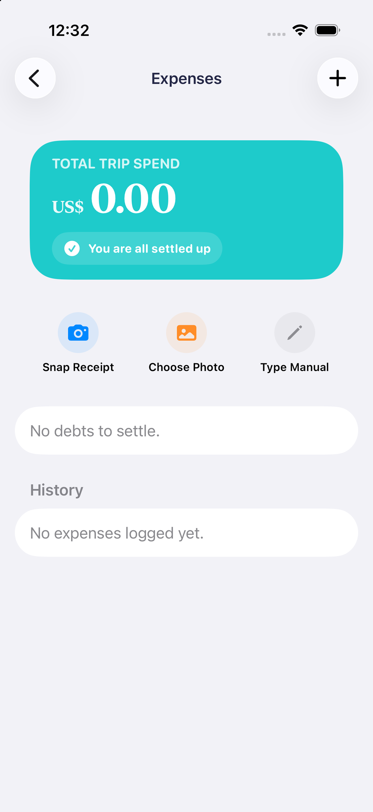
1. Trip Expense Overview
Planning a group trip is exhausting. What starts as an exciting idea quickly devolves into a mess of 150-message WhatsApp threads, disconnected spreadsheets, and scattered map pins. The hardest part isn't finding things to do; it's the mental load of trying to turn everyone's ideas into a single plan.
I built Crewcation to solve this, rescuing the 'Trip Captain' from doing all the work and getting friends out of the group chat and onto the plane. I designed it as a multi-platform ecosystem: a native iOS SwiftUI app for a premium Apple experience, a Next.js Progressive Web App (PWA) so friends can instantly join on the web without downloading anything, and a native Android client (currently in active development) following Google's Material Design 3 paradigms. By using a simple 'Vibe Check' to align budgets privately and an AI engine to build itineraries from votes, the app guides groups through a clear, progressive path:
Create > Invite > Suggest > Vote > Finalize & Execute.

The origin of this project didn't start with a polished brand identity or even the name "Crewcation." It began as a raw challenge: How do we stop group trips from dying in the chat and let everyone suggest and vote on ideas?
When I started building, I began with a simple, functional MVP and iterated on it rapidly. Driven by the speed of thought (thanks to the power of building code with AI) and the urgency to get the product built, I continuously layered new features onto the core system: turning a basic trip planner into a complete workspace with real-time mapping and automated itineraries.
I realized traditional travel tools fail because planning can become chaotic and open-ended. When everyone has equal control, it leads to immediate choice paralysis. I flipped the script by splitting the experience into two simple, role-based flows:
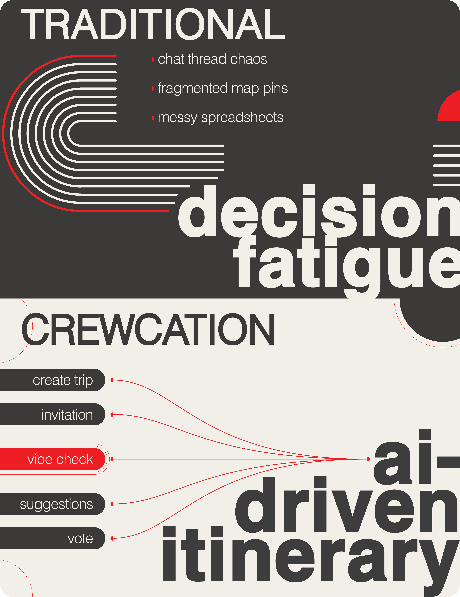
I researched group travel dynamics to understand the emotional and financial friction that happens before booking, and designed features to help groups align on budgets and destinations.
Endless Messaging
Fear of Speaking Up
Varying Group Interests
Dying in the Chat
I designed features to solve these exact frustrations:
As a solo builder, I had to be smart with my time and energy. I set up a single Supabase backend to keep all the data in sync, and then built separate front-ends on top of it: a native iOS app, a Next.js web app, and a native Android app (currently in active development).

To make group travel planning actually work, our architecture is designed as a cohesive ecosystem that follows the user's journey. Instead of forcing 10 to 15 casual guests to download a native bundle, configure profiles, and accept system alerts before any planning has occurred, we start on the web. Invited guests receive a secure email invitation that bypasses the app store wall entirely, instantly welcoming them into the Next.js PWA Client (our "Lite-Brite" Web Experience) to vote and suggest ideas directly from their mobile browser.
For the "Trip Captain" and power users on iOS who need heavy offline capability, the experience elevates to the Native iOS Client (SwiftUI + SwiftData). Built to harness raw processing efficiency and fluid gestures, it utilizes SwiftData models with explicit cascade dependencies (Trip ➔ [TripLeg] ➔ [TripSuggestion] ➔ [Vote]) cached locally for offline planning during flights, reconciling automatically with Supabase via a customized merge algorithm.
And we didn't want Android users feeling left out. To complete the ecosystem, we kicked off a native Android client using Kotlin and Jetpack Compose. Instead of forcing iOS-style visual paradigms like glassmorphic blurs onto Google's operating system, the interface leans heavily into Material Design 3. By combining surface elevations with our signature Coral (#FF6F61) accent, the app feels distinctively Android while keeping everyone connected to the same Supabase database in real-time.
Crewcation runs on three platforms — native iOS, a React PWA, and Android — each built to feel genuinely at home on its host OS. Rather than forcing a single visual language across all three, I treated each platform as a first-class citizen with its own design authority. The guiding principle was clear: platforms can look and feel different, but they must do the same things with the same data.
The shared design system is built to reduce the stress of trip coordination by keeping the layout clean and easy to scan. I moved away from the corporate blues and heavy borders typical of traditional travel planners, focusing instead on a premium, minimalist foundation:
An interactive, live-rendered style sheet demonstrating the cross-platform design tokens, custom SVG icons, typographic hierarchy, and grid systems used in the dual-client interface.
View Live Style GuideThe iOS app was built with strict adherence to Apple's Human Interface Guidelines as the non-negotiable design authority. Every interaction pattern, component choice, and motion decision deferred to what Apple defines as the right way to build for its platform — because iOS users have deeply internalised these conventions, and anything that deviates from them erodes trust immediately.
.sheet(), NavigationStack, TabView, List, and ScrollView throughout — no custom-reimplemented UI where a native component already exists and does the job correctly.For Android, I adopted Google's Material 3 Expressive design system as the foundational language, implemented through Jetpack Compose. Material 3 Expressive is Google's most personality-driven evolution of Material Design — it prioritises emotional resonance, fluid motion, and adaptive theming, which aligned naturally with Crewcation's social and playful product character.
BottomSheet, NavigationBar, FloatingActionButton, and LazyColumn are used throughout, mapping each feature to the correct Material 3 component rather than building custom alternatives unnecessarily.The PWA deliberately avoids mimicking iOS or Android. Web users arrive with different expectations — they're on browsers, often on desktops or tablets, with pointer devices, hover states, and no OS-level sheet physics. Forcing iOS chrome onto a browser tab would degrade both the web experience and the integrity of the native apps.
backdrop-filter: blur() for sheet overlays and navigation, achieving the same premium depth as the native apps through web-standard CSS rather than porting SwiftUI materials.While each platform is allowed to look and feel distinctly native, the underlying functionality and data model are identical across all three clients. Every platform reads from and writes to the same Supabase backend. All core features behave consistently in logic, even when the UI pattern differs by platform.
For example, the sentiment voting system uses a SwiftUI Slider with haptic ticks on iOS, a styled <input type="range"> with a CSS colour gradient on the PWA, and a Material 3 Slider component on Android — three different UI implementations, one shared data model, and one server function processing the result. The crew always sees the same votes, the same scores, and the same outcomes regardless of which platform they joined from.
We wanted users to start planning trips immediately without onboarding friction. We initially designed a guest flow where users could create itineraries before registering, but migrating guest data to registered accounts proved too complex. Instead, we implemented a quick sign-up using Apple, Google, or email verification codes. This keeps the onboarding process simple while ensuring user data is secure and synced from the start.

Figure 1: Captain's Trip Creation Flow — Visualizing local trip initialization and quick cross-platform sign-up.

Figure 2: Crew Onboarding & Invitation Loop — The guest invitation flow with deferred registration upon acceptance.
After setting up the basic trip details, the Captain sends email invites to the crew. If a crew member already has an account, the invite shows up directly on their dashboard. Anyone new to the app can view the basic invite details first and only needs to sign up when they decide to accept the invite and join the workspace.
The Vibe Check is a quick setup that maps a traveler's style (such as budget, energy, and food preferences) the first time they sign up. Instead of filling out a new survey for every single trip, users set their preferences once in their profile. If they change their travel style later, updating their profile instantly updates their tags and match scores across all active group trips, keeping their preferences anonymous while ensuring recommendations stay accurate.

Figure 3: Vibe Check Preference Interface — Immersive preference selection tiles designed to capture individual travel styles while preserving budget privacy.
The system logs user preference parameters on an explicit scale:

Figure 4: PWA Vibe Check Interface
Once the trip details are set, the crew can start suggesting places on the map. I designed a shared map view where anyone can pin locations and add notes.

Crewcation iOS App — Places Map showing crew map suggestion pins
Instead of losing links in a group chat, crew members can write check-in details, links, or notes directly on each suggested place. This keeps everything in one spot. I tailored the placeholder prompts for each platform to guide the team:
I replaced the standard 5-star rating with a 10-point slider to capture how people actually feel about a suggestion. On iOS, the slider has tactile ticks, and on the web, it uses a color gradient that changes as you drag.

Figure 5: Sentiment Slider UI on iOS
To keep the database in sync between users on the new 10-point slider and those on older 5-point web versions, the system automatically converts the votes behind the scenes by dividing the 10-point score by two and rounding it (so a 7 out of 10 maps to a 4 out of 5 for legacy clients).
Crewcation is a living product. While the core trip planning loop is live and functional, two high-impact features are currently in active development — designed and scoped, being built in the open as part of this ongoing project.
Financial tension is one of the biggest friction points in group travel. To solve this, I've designed and partially built a collaborative expense manager. Crew members will be able to log shared trip costs in three ways: snapping a receipt with the device camera (triggering a multimodal OCR analysis via a Supabase Edge Function to extract merchant, currency, and total), uploading from their photo library, or entering details manually.
Once expenses are logged, the app automatically calculates who owes who and surfaces a simple settlement list — with quick actions to settle up or send a friendly nudge directly in the group chat. The PWA version is designed to capture early interest via a waitlist while the feature reaches production readiness.

Primary Concept Drawing — Split-Cost Expense Manager

1. Trip Expense Overview

2. Capture Receipt
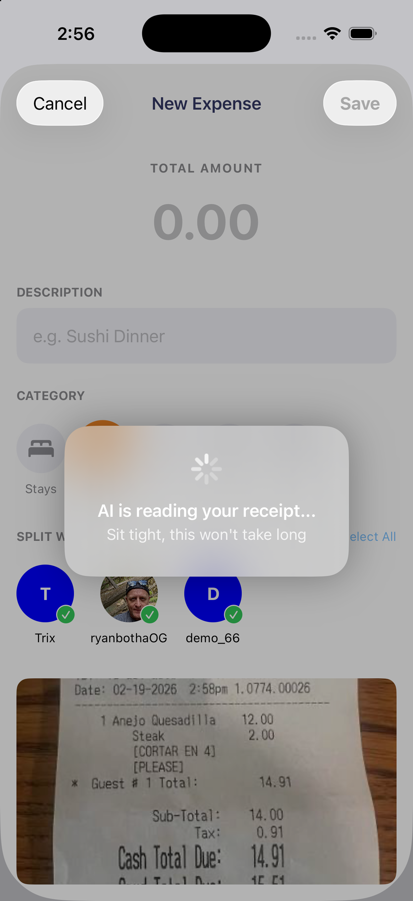
3. AI Reading Receipt
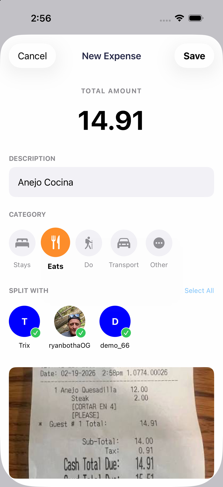
4. AI Extraction Result
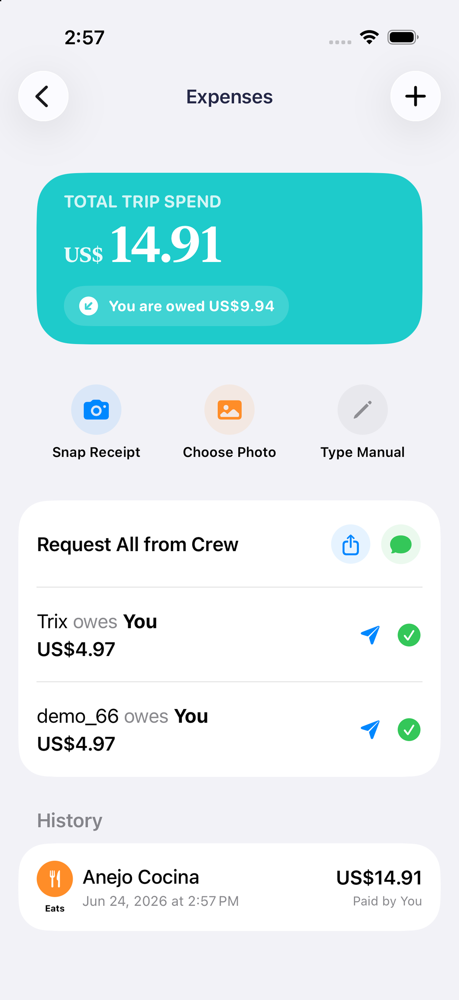
5. Expense Added to Trip
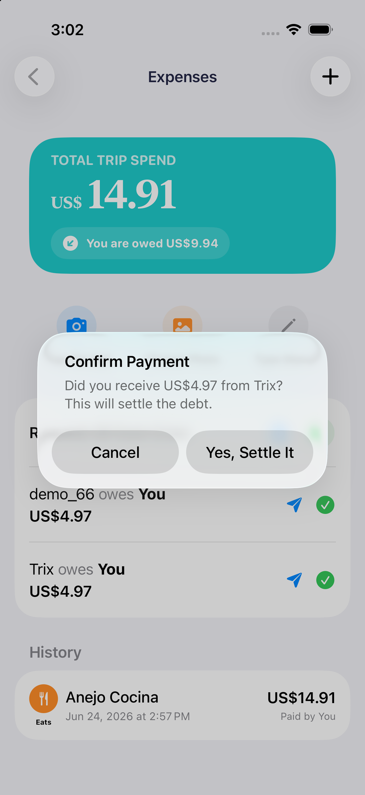
6. Settle Split Balances
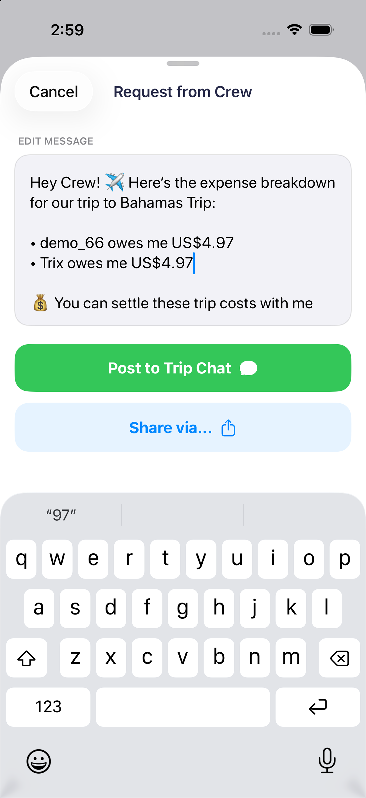
7. Settle Message
Following the same flow and Supabase backend logic, the Android implementation uses Jetpack Compose and Material 3 Expressive. It maintains the core feature parity while honoring native Android UI paradigms.
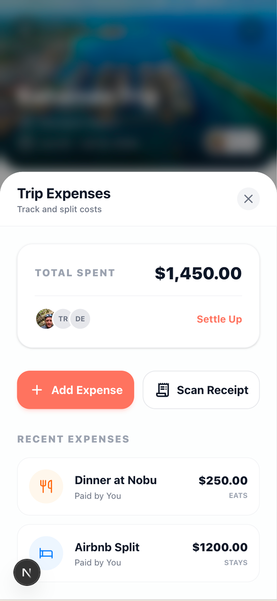
1. Material 3 Dashboard
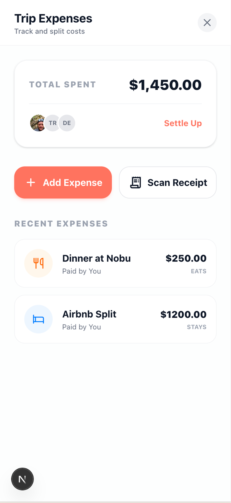
2. Expense Summary
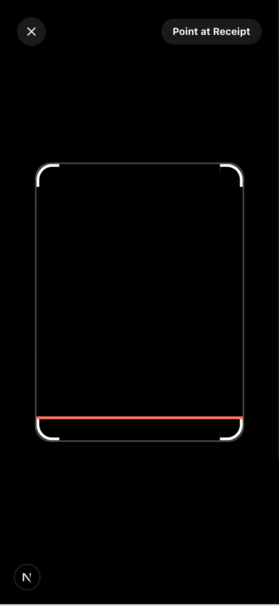
3. Capture Receipt
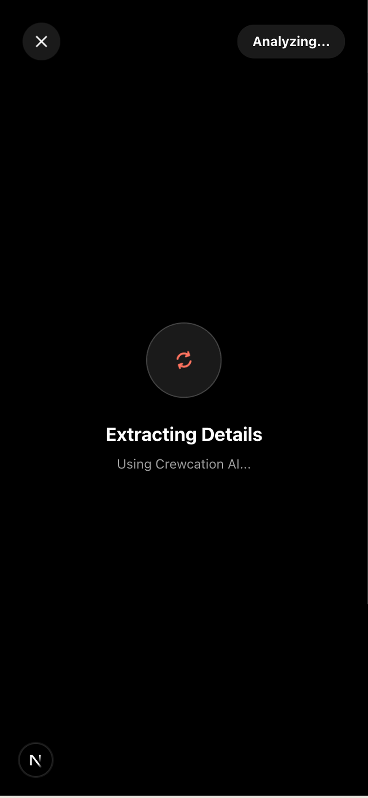
4. AI Reading Receipt
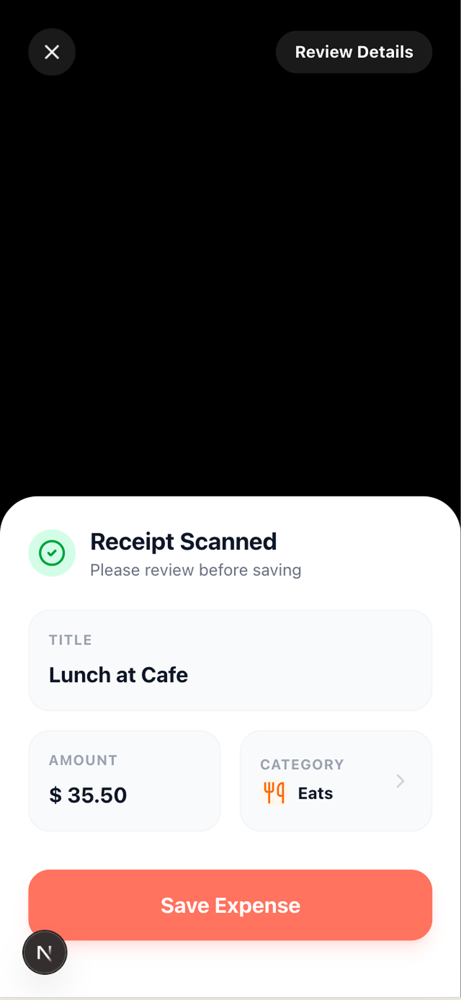
5. AI Extraction Result
Once a crew has voted on all their suggestions, the app will lock the results and pass them to Gemini to generate a structured, day-by-day trip plan. Rather than delivering a raw list, the AI analyses the crew's vibe check preferences, geographical coordinates, and top-voted places — filtering out low-scored ideas, clustering nearby activities to minimise travel time, and scheduling meals and events at logical hours.
Every item on the final itinerary will include a clear justification (e.g., "Added because 4 out of 5 of your crew voted for it and it's 2 minutes from your hotel") — eliminating ambiguity and helping groups get the trip booked faster.
Upload clean, stylized UI layout of "The Plan" tab. Show a beautiful vertical timeline grid displaying sequential travel days. Individual cards feature crisp city headings, a "95% Crew Match" badge, and a personalized, italicized "Gemini Insight" explaining the chronological logic.
assets/crewcation-itinerary-plan-mockup.pngInstead of writing all the code myself, I used autonomous AI agents in Google Antigravity to help build, audit, and fix the iOS, web, and Android apps. This cut down development time and let me focus on the design system. I used Figma extensively to build out the layouts, develop the brand style system, and design all the branding and marketing materials from scratch. Since I am a solo developer, designer, and product manager, keeping track of everything across three platforms was tricky, so having Figma as my visual source of truth and using agents to maintain code parity was key to keeping us aligned.
To keep the AI agents on track and manage the project without losing context, I set up a central repository of architecture files, codebases, and logs in NotebookLM. AI agents can easily lose context in long chats, so whenever a new agent session started, it read these files to instantly get up to speed on the project's state and maintain logic persistence of the original concept across all 3 platforms. While this wasn't a linear workflow, maintaining a modular approach and using NotebookLM to record project progress and logic allowed us to keep feature parity without losing track of where we were.
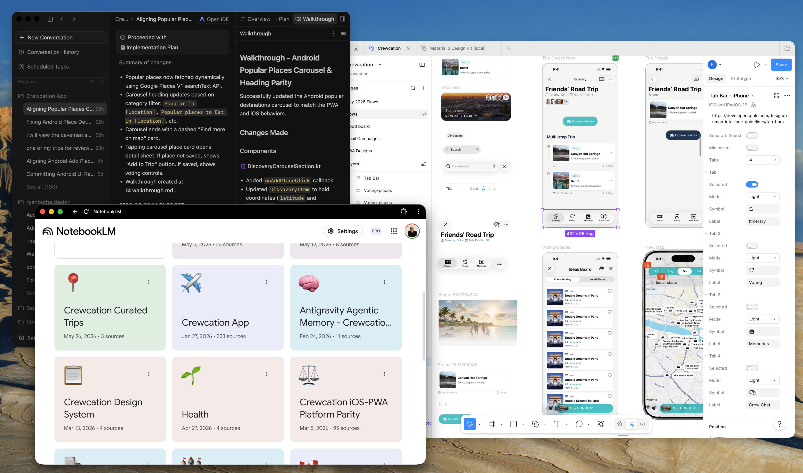
Figure 6: Crewcation Agentic Workflows Overview
To find where the platforms differed, I manually reviewed all three apps to spot gaps in the UX and UI. Once I had identified the visual and experience discrepancies, I had the AI agents inspect the codebases to find the underlying technical differences between SwiftUI, React, and Jetpack Compose.
To make sure the design stayed high-fidelity, I worked systematically by updating one section at a time. If the agent started making incorrect decisions or hallucinating, I guided it by feeding in screenshots of what it had built along with detailed design markups.
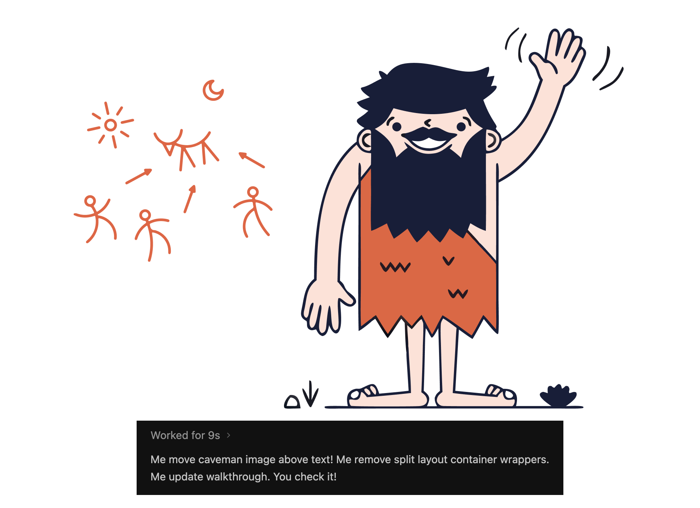
To slash token consumption, minimize API costs, and keep context windows focused, I established the Caveman Protocol. By forcing the AI agents to strip away all polite chatter and conversational padding, they respond directly with dense, execution-focused code edits. This even led to the AI agent hilariously adopting the persona of 'Grog'—communicating in primal caveman grunts and short phrases while executing precise code updates to maximize speed and efficiency.
I had the agents scan the iOS code and web code to find gaps, like differences in image loading or styling. They generated checklists and helped refactor the code to keep the features in sync. For example, they refactored the itinerary queries to run through a single server function, ensuring the AI results matched perfectly on both web and mobile.


Figure 7: Platform-specific Agentic Workflows (Xcode/iOS left, PWA/Android right)
Using AI agents completely changed how I build products. As a solo creator, managing these agents allowed me to maintain high design fidelity and sync features across different platforms much faster than building alone.
All 50 native iOS screens — built with SwiftUI and designed to Apple's Human Interface Guidelines.
Crewcation shows how a strong design system and simple onboarding can turn a stressful group chore into a fun, collaborative experience.